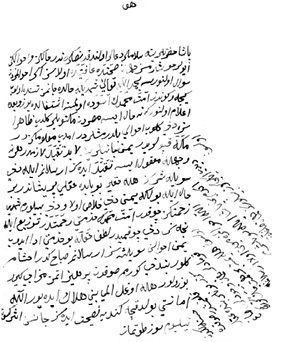

Belge 2: TKSA E2457/3, Kösem’in veziriâzama sultan adına emri – Yemen-işi ile oğlu Sultan Murad’ın sağlığı
Belge 2
“Huwa
Paşa hazretlerine selâmlar, du’âlar olunduktan sonra, nedir hâliniz ve ahvâliniz eyüler, hoşar mısız, hemân sıhhat ‘âfiyette olasız. Eğer ahvâllerden su’âl olunursa bî-hamdüllâhi ta’âlâ şimdiki halde cânımız tende olub gice ve gündüz ümmet-i Muhammed’in âsûde olmasına iştigâldeyüz ve ba’dehu i’lâm olunur ki:
Ne hâl ise Mısır’dan mektûblar geldi; zâhir size dahi gelib ahvâli bildirmişlerdir. İmdi ma’lûmunuzdur, Mekke kapularıdır Yemen cânibinin. Lâbüd takayyüd lâzımdır; her ne vechile ma’kûl ise takayyüd idesiz.
Arslanım ile dahi söyleşisiz; hele fakîr bu bâbda ‘aklı perîşandır, bu hâlleriyle bolaki (olaki) Yemen dahi halâs ola ve Zû (Allâh ?) bilürüm şimdiye (dek) zahmetiniz çokdur, Ümmet-i Muhammed’in hidmeti rahmettir, tevzî’ile nicesiz; dahi çok mudur. Lütf-i hakla bu hidmeti edâ idüb Yemen ahvâlini söyleşesiz.
Arslanım sabah gider, akşama gelür, ben dahi görmem, sovukdan perhîz itmez, mizâcı girü bozılur, hele oğul olmaya beni helâk ideyor; Allâh emâneti, buldukca kendüye nasîhat idesiz, cansız eşer gider, neyleyüm söz tutmaz, hastelikden kalkmışdır, sovukda gezer, bunlar bende ‘akıl komadılar; hemân vücûdları sağ olsun;
Hele Yemen’e bir himmetcik görün. Allâh ahvâlimize mu’în ola; Arslanım’a andım, ben Paşa ile söyleşirim didi, iki göz, bilürsüz, hemân sağlıkda olsun.”
Yorum:
1. Kösem, veziriâzama yazdığı bu yazıda sağlığını sorar, yakınlık gösterir, kendisinin iyi olduğunu ve halkın işleriyle gece gündüz uğraştığını belirtir.
2. Mısır’dan kendisine ve vezire mektuplar geldiğini, Mekke ve Yemen hakkında haberlerin kaygıya neden olduğunu söyleyerek yakından ilgilenmesini tavsiye eder.
Arslanım dediği oğlu Sultan Murad ile Yemen olaylarını söyleştiğini, Kösem kendisinin “aklı perîşan” olduğunu yazar.
3. Kösem, oğlu Murad’ın soğuklarda sağlığına dikkat etmediğini, sabah gider, akşam gelir, soğukdan hasta olur, bu yüzden kendisinin anne olarak “helâk” olduğunu söyler, oğlu pâdişahın sağlığı başlıca düşüncesidir. Vezirinden ona nasihatte bulunmasını ister; aklı fikri oğludur, oğlu Murad o yaşta devlet işleriyle de ilgilidir, Yemen olayları hakkında bilgi almak için “ben paşa ile söyleşirim” demiş; Kösem “iki göz (üm) bilürsüz, hemân sağlıkda olsun” der.
Bu arzda Yemen kargaşası İstanbul’da başlıca kaygı konusu olarak anılmıştır. 1033 (25 Ekim 1623–14 Eylül 1624) yılında Yemen’de Zeydîlerden Araplar, peygamber soyundan geldiğini iddia eden İmâm Mehmed’i başlarına geçirip isyan bayrağını kaldırmışlar.27 İmâm Mehmed emîrülmü’minîn unvanını takınıp egemenlik iddiasında idi. Yemen paşasının tedbirsizliği ve Mısır valisi Bayram Paşa’nın hatâları yüzünden İmâm, Yemen’in önemli bir kısmını ele geçirmiş, adına para bastırmış bulunuyordu. Sahradaki Araplara buğday, pirinç dağıtarak kendi tarafına döndürüp, yüz bini aşan kuvvetleriyle Yemen valisi Haydar Paşa’yı kuşatmıştı. Kalede açlık çeken paşa, İstanbul’dan yardım istemekte idi. Yemen’e Gürcü Ahmed Paşa’yı gönderdiler. Mekke’ye varan Ahmed Paşa’yı Mekke şerîfi ziyarette zehirlemiş. Yemen’e yardım gönderilmesi âcil bir hal almış. Kösem Sultan, Mısır’dan gelen mektuplarda bu âcil duruma işaret eder. Bunun üzerine Kansu Bek Yemen beylerbeyi atandı. İleride, sipahi ve silâhdâr bölüklerine katılacakları vaadiyle İstanbul’un “erâzil ve eclâfından” on bin kişilik bir kuvvet meydana getirildi. O tarafın koşullarını bilen İdris Ağa kumandasında asker gönderildi. İstanbul’un güvenliği için de bu, faydalı görülüyordu. Gemilere bindirilip Mısır’a gönderildi (Kösem’in yazısında Mısır, Yemen’in kapısı sayılmıştır). Yemen’de Moha’ya çıkan bu kuvvet, ilerleyip kuşatma altındaki San’a’ya varamadı. Yemen beylerbeyi atanan Kansu Paşa, Mekke şerîfini azlettiğinden boğdurup yerine Şerîf Mes’ud’u getirdi. Olaylarla Kösem’in ifadesi karşılaştırıldığında, bu belgenin 1038 hicrî yılının sonlarında, (1629 Ağustos ayında) yazıldığı anlaşılır. IV. Murad, o tarihte 18 yaşında idi. Bundan üç yıl sonra 1632’de tüm saltanat iktidarını icra etmeye başlayacaktır. 1632’den 1640’ta ölümüne kadar geçen zamanda da Kösem’in devlet işlerine müdahale ettiği biliniyor.
27 Nâimâ, II, s. 445-447.